Comunidad · el recorrido completo, paso a paso
De cero a comunidad viva.
Reseteamos la comunidad del negocio de prueba y recorrimos el camino real en producción, sin saltear una sola pantalla: activar el add-on, crearla, publicarla, el primer contenido, la puerta pública y la vida adentro — con una alumna real entrando, escribiendo, recibiendo respuesta y saliendo.
Capítulo 1 · En el panel
Activar el add-on
Comunidad es un add-on del plan. El camino arranca en Tu plan, con una activación guiada que primero te muestra qué estás prendiendo.
PANEL pro.agora.red · Tu plan
Todo empieza en Tu plan
Entre los add-ons del plan aparece Comunidad · no activa, con una promesa concreta: publicaciones, encuentros y recursos en un espacio privado.
Detalle a propósito: Comunidad todavía no existe en el menú lateral. Aparece recién cuando el add-on está activo.
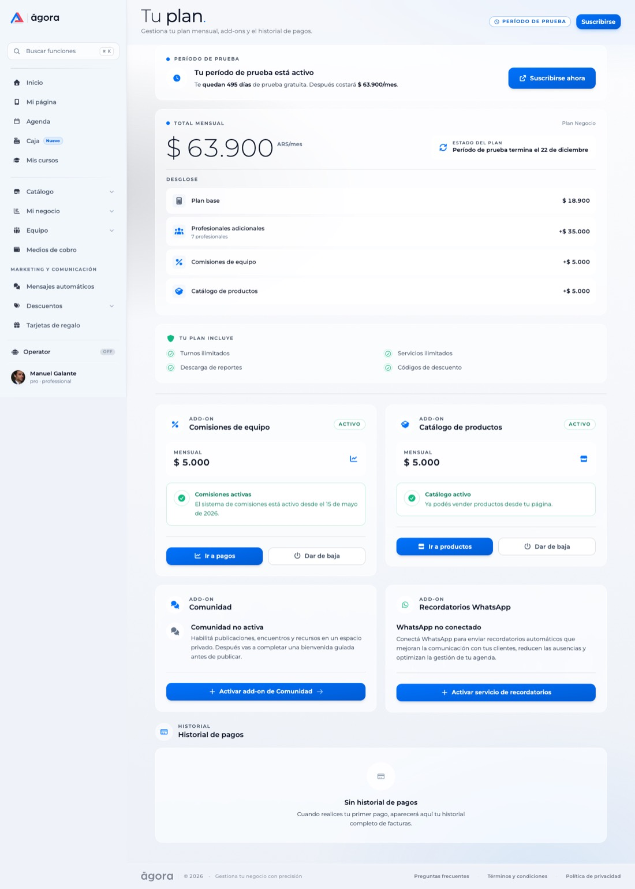
PANEL Activación guiada · 1 de 5
Qué estás prendiendo: publicaciones
El botón no activa nada todavía: abre un recorrido de cinco pantallas que explica el modelo antes de cobrar un peso.
Primera: un solo feed — publicaciones, anuncios destacados, imágenes y PDF.
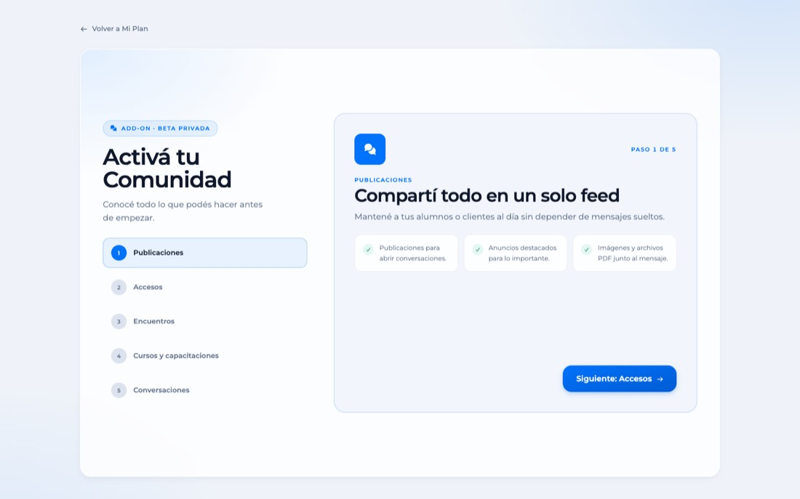
PANEL Activación guiada · 2 de 5
Accesos: quién entra y cómo
Gratis o pago mensual, secciones por grupo, y acceso directo para personas puntuales. La decisión de negocio queda presentada antes de tocar configuración.
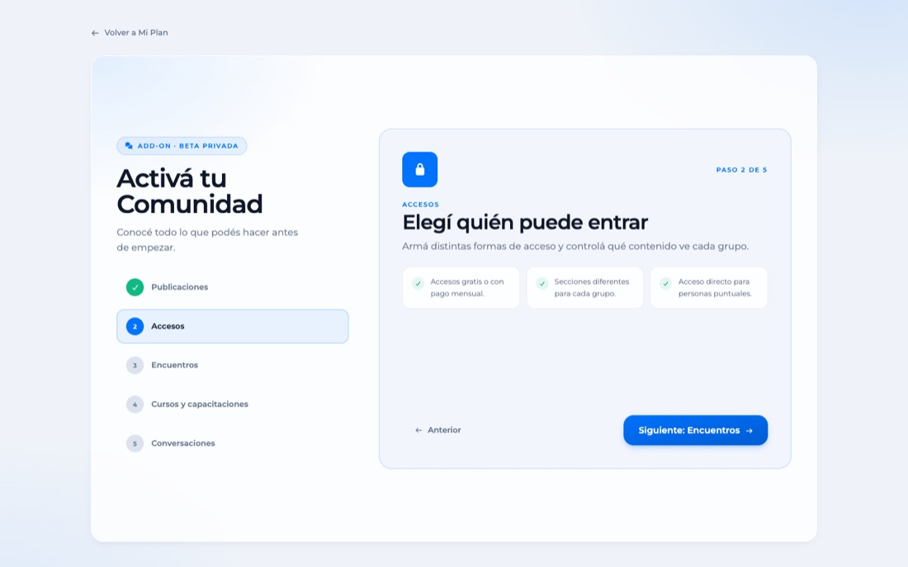
PANEL Activación guiada · 3 de 5
Encuentros con fecha fija
Online o presenciales, visibles según el acceso de cada grupo. Lo que después va a ser la serie semanal de consultas ya está contado acá.
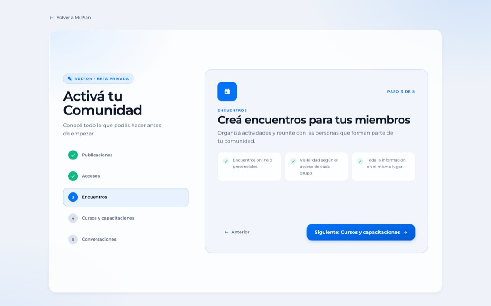
PANEL Activación guiada · 4 de 5
Cursos y capacitaciones, conectados
Quien compra un curso puede entrar automático; un acceso puede incluir un curso; o el curso puede conseguirse solo siendo miembro. Las tres variantes, explicadas de una.
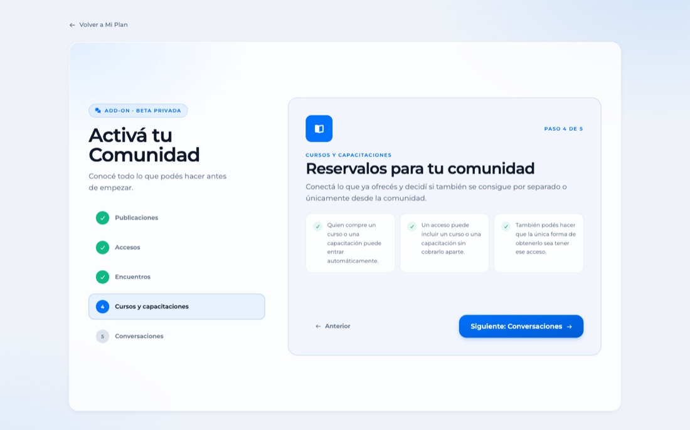
PANEL Activación guiada · 5 de 5
El precio, recién al final
Última pantalla: conversaciones con contexto — y abajo del botón, lo único que importa firmar: $ 5.000 por mes, sumado a tu plan, desactivable cuando quieras.
Recién acá aparece Activar Comunidad.
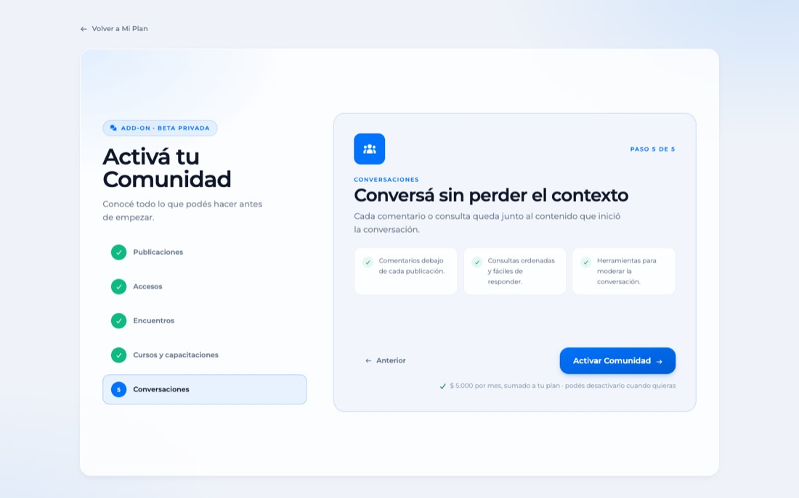
Capítulo 2 · En el panel
Crear y abrir
Activado el add-on, crear la comunidad son tres decisiones en fila — nombre, acceso, publicar — y ninguna requiere entender el modelo entero de antemano.
PANEL Configuración inicial · 1 de 3
Elegí el nombre
Aterrizás en Comunidad con el chip add-on activado y un wizard de tres pasos. El nombre ya viene propuesto con el del negocio; se puede cambiar cuando quieras.
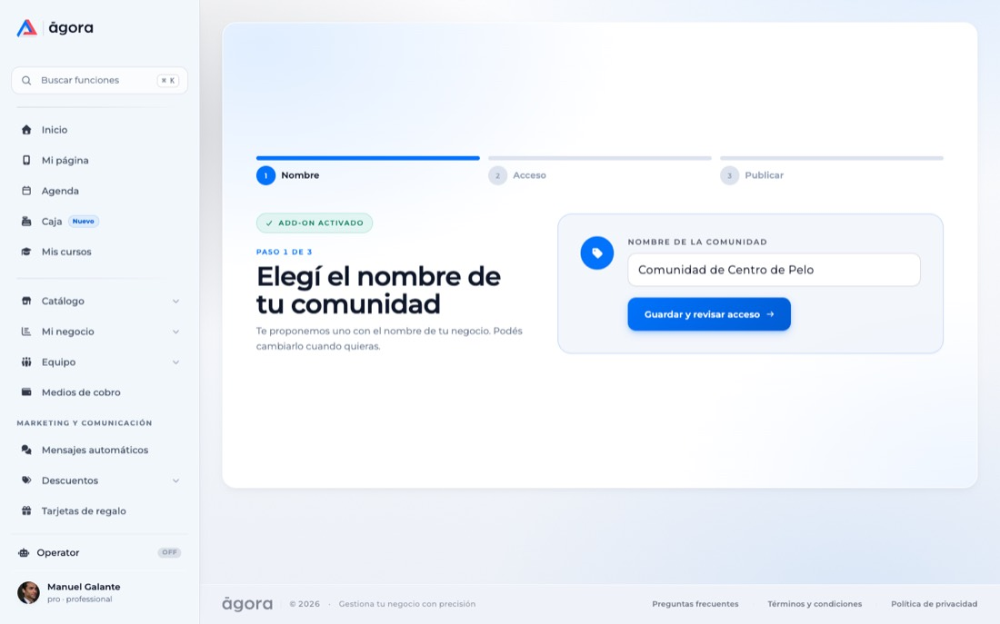
PANEL Configuración inicial · 2 de 3
Prepará el primer acceso
Tres decisiones simples en un modal: cómo se llama el grupo (Alumnos), cómo entran (gratis o mensual) y qué ven (Novedades, la puerta de entrada).
Todo se puede cambiar más adelante; nada de esto bloquea el arranque.
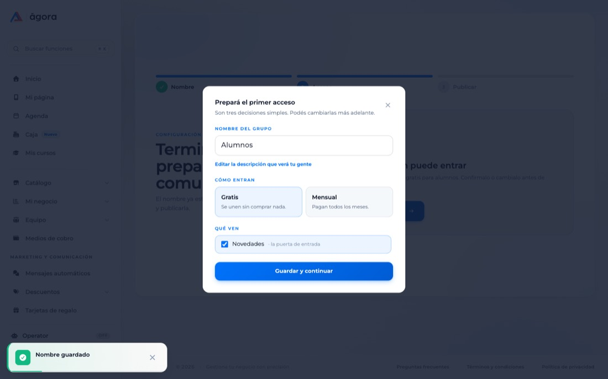
PANEL Configuración inicial · 3 de 3
Ya podés abrir tu comunidad
Nombre ✓, acceso ✓. El tercer paso es un solo botón: Publicar comunidad. Al publicarla obtenés el enlace para compartir.
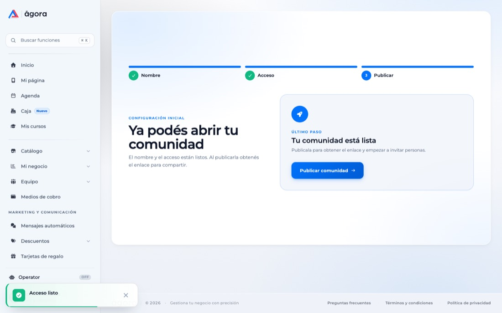
PANEL Comunidad publicada
En vivo, con el link listo
Publicada: la barra EN VIVO queda en una sola línea con el link real (agora.red/centrodepelo/comunidad) y las acciones — Copiar, WhatsApp, Ver como miembro. El Inicio estrena su forma definitiva: el feed a la izquierda, y a la derecha el rail con el próximo encuentro, la semana en números, los Primeros pasos que se tachan solos y Tu puerta. Y Comunidad ya aparece en el menú lateral.
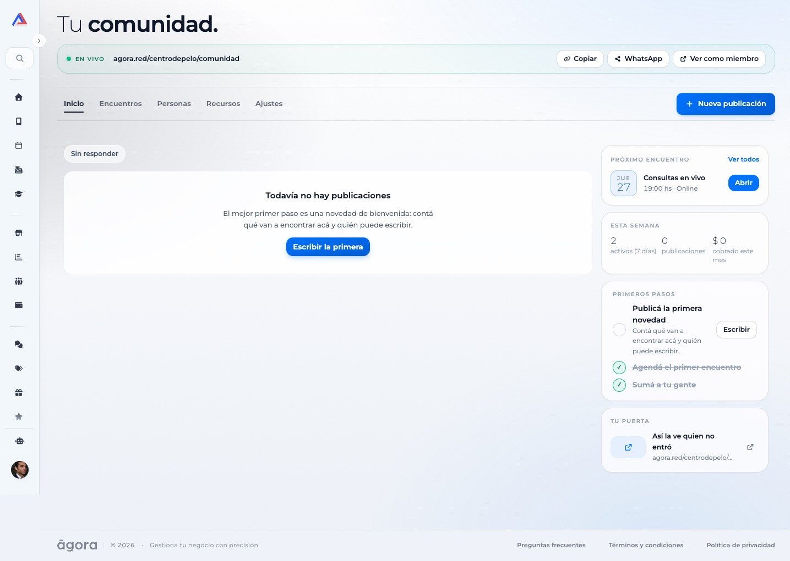
Capítulo 3 · En el panel
El primer contenido
El checklist guía las dos primeras piezas: una novedad de bienvenida con foto y una serie semanal de encuentros — con su primera excepción incluida.
PANEL Nueva publicación
El composer, vacío
«Escribir la primera» abre el composer a pantalla completa: Publicación o Anuncio, a quién le llega (toda tu comunidad o una sección), editor con formato, y adjuntos — hasta 4 imágenes y PDF.
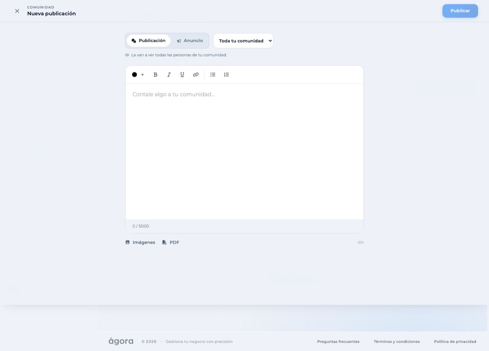
PANEL Nueva publicación
La bienvenida, escrita y con foto
Texto de bienvenida y una placa con la fórmula del día adjunta. El contador marca 282/5000, el adjunto 1/4, y Publicar se habilita.
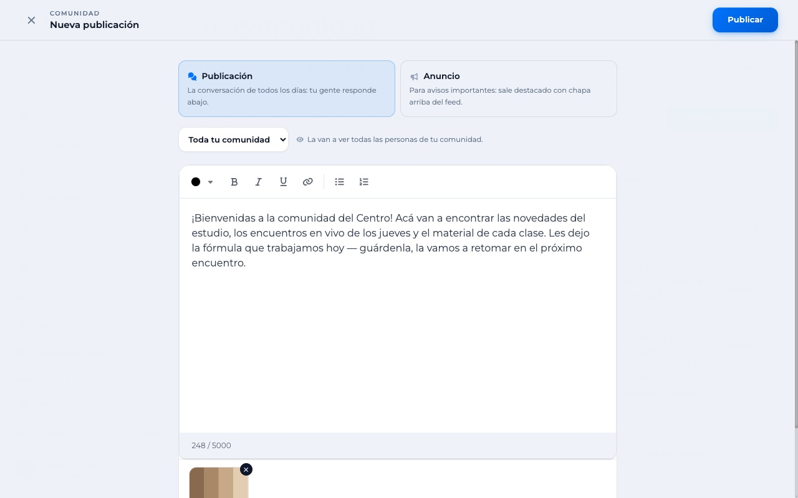
PANEL Inicio
Primera novedad publicada
El post queda arriba con su placa — y el sistema toma nota: la métrica pasa a 1 publicación y, con las primeras piezas hechas, la guía de primeros pasos se retira sola. Sobre la imagen aparece el marcador para guardarla en Recursos, y arriba del feed ya vive la tira del composer para la próxima novedad.
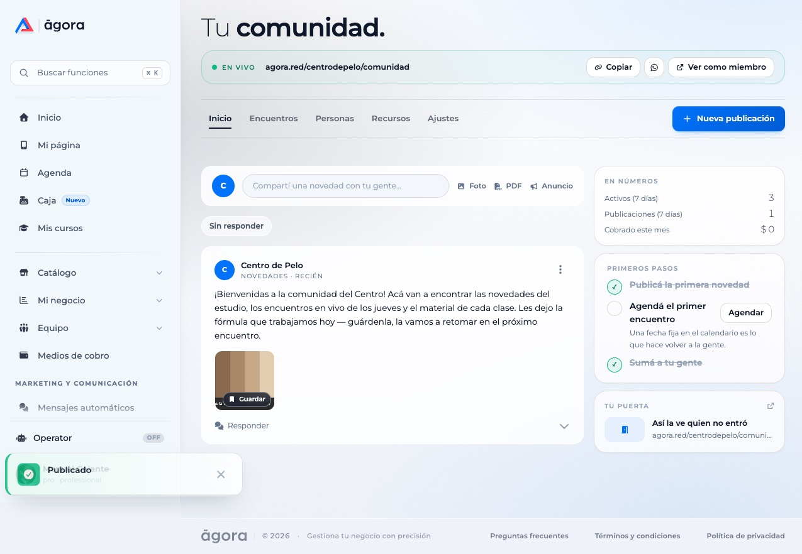
PANEL Encuentros · Nuevo encuentro
La serie semanal, en un form
«Agendá el primer encuentro» abre el form: título, quién puede verlo, qué día, de 19:00 a 20:00, online con link de Meet y — la clave — se repite todas las semanas. Cupo opcional; hasta cuándo se repite, también.
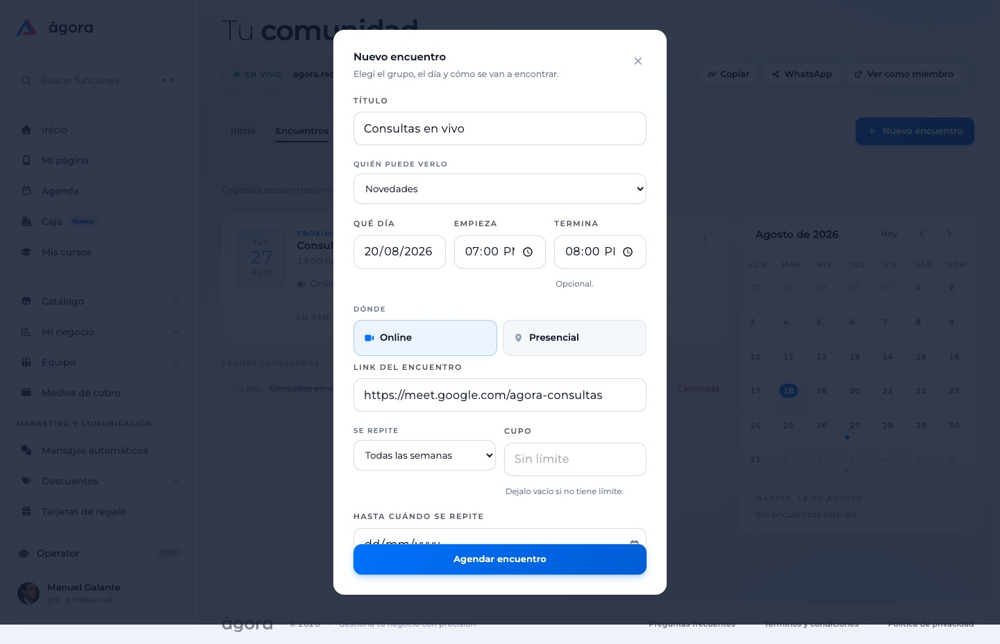
PANEL Encuentros
Una serie viva, no una lista de fechas
Queda una sola tarjeta con el próximo (JUE 20 AGO), 19:00–20:00 hs, Online · Abrir link · Todas las semanas, y quién lo ve (Alumnos) — con las tres acciones separadas a propósito en el menú ⋮: Editar, Cancelar esta fecha, Cancelar la serie — porque cancelar una fecha y matar la serie son decisiones distintas. Al lado, el calendario del mes marca con un punto cada fecha real.
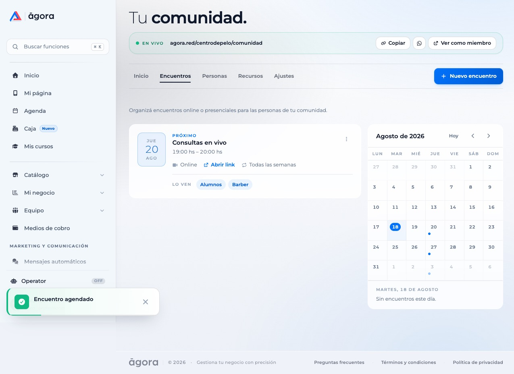
PANEL Encuentros · Cancelar esta fecha
Cancelar una fecha sin tocar la serie
«Cancelar esta fecha» pregunta clarito: solo esa fecha, la serie sigue como siempre. Confirmado: el próximo salta al 27, abajo queda el registro — Fechas canceladas: 20 ago, tachado — y el punto del 20 desaparece del calendario. Los miembros no van a recibir recordatorio de esa fecha.
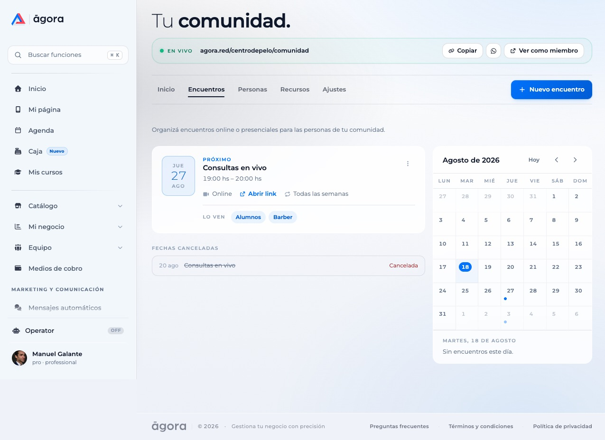
PANEL Encuentros · en el teléfono
El calendario, cuando la pantalla achica
En desktop el calendario ya no es una vista aparte: acompaña siempre a la lista. Donde sí vuelve el conmutador Lista / Calendario es en el teléfono — en pantalla chica conviven mal, así que elegís una por vez.
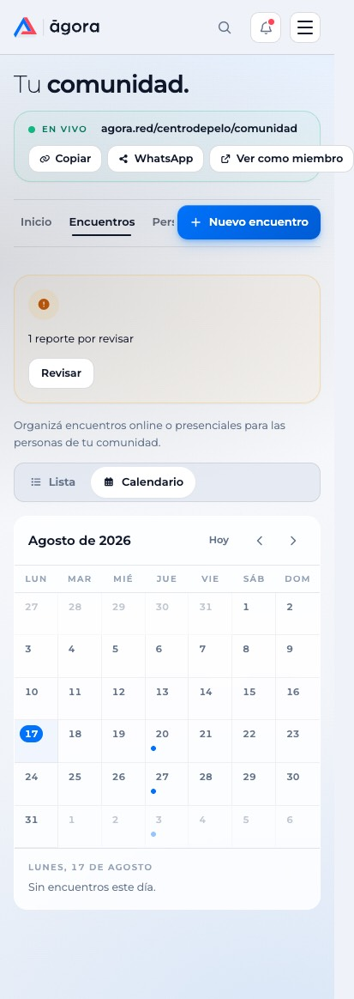
PANEL Recursos
La biblioteca que se arma sola
La placa de la fórmula, guardada desde el post con un click en el marcador, aparece en Recursos: una grilla de miniaturas — los PDF e imágenes que decidiste que tu gente encuentre sin buscar entre publicaciones — con una celda punteada que invita a guardar la próxima.
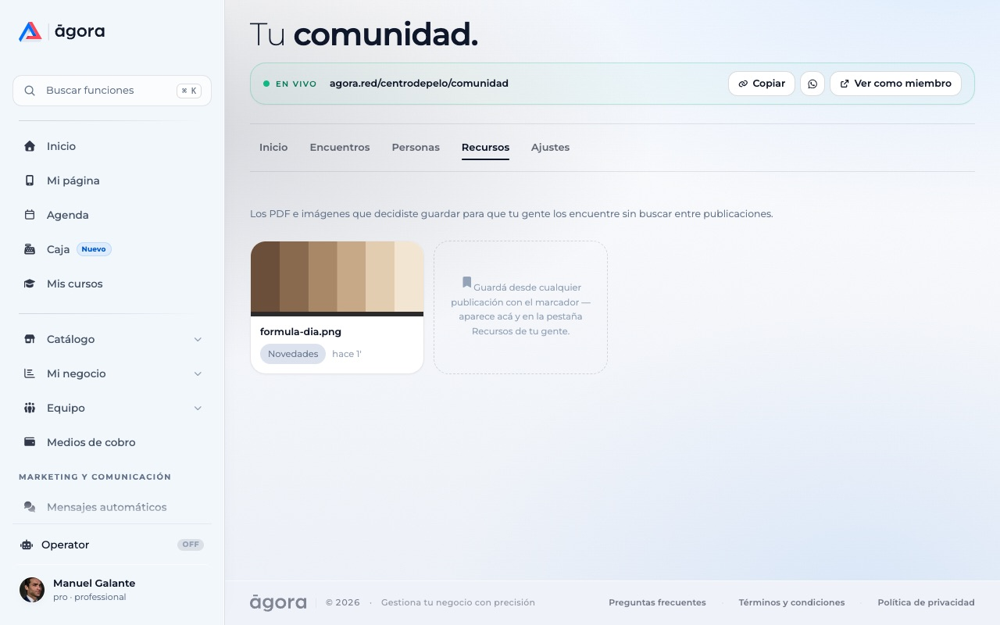
Capítulo 4 · En el panel
La puerta y las secciones
Antes de invitar gente: una sección donde los miembros puedan escribir, y la puerta pública con portada, presentación y reglas.
PANEL Ajustes · Secciones
Una sección donde escriben ellos
El form de sección pide tres cosas: nombre (Consultas), quién puede verla (Alumnos) y qué ve quien no tiene acceso — con candado (ve que existe y qué necesita) u oculta (no sabe que existe). Creada, aparece en el panel de Secciones con su estado y su visibilidad, al lado de Novedades.
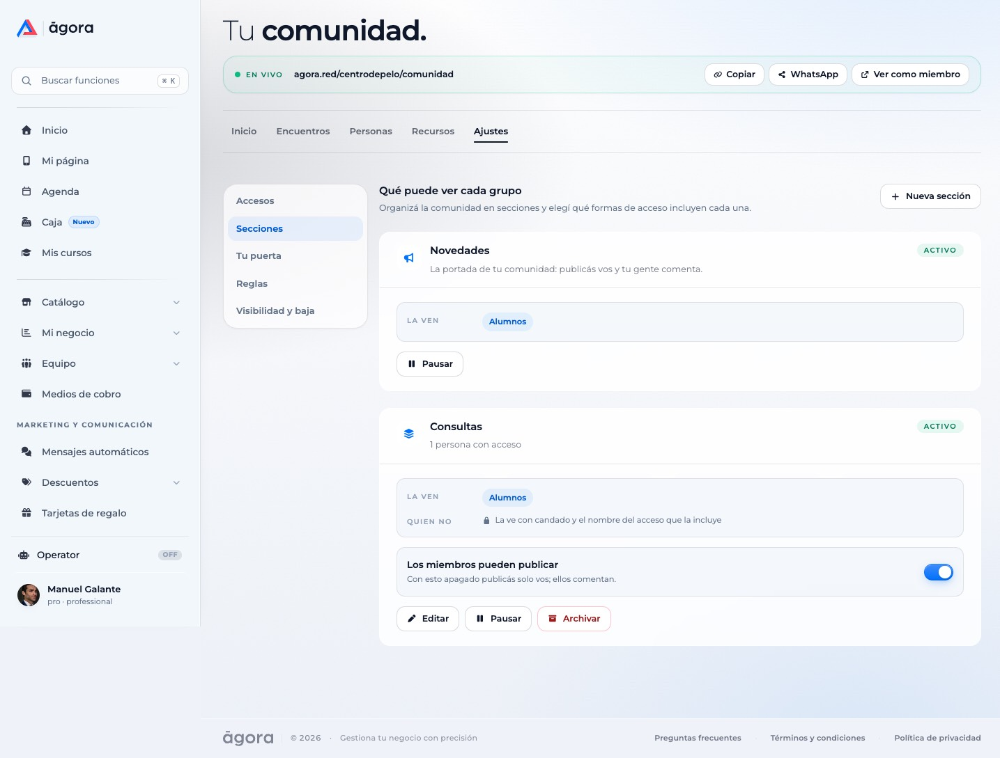
PANEL Ajustes · Tu puerta y Reglas
La puerta y las reglas, cada una en su panel
Ajustes navega por secciones — Accesos, Secciones, Tu puerta, Reglas y Visibilidad y baja — con un panel por vez. Tu puerta concentra portada, nombre y presentación, con el «Ver cómo se ve» que abre la página pública tal cual la ve un visitante; las Reglas de convivencia vienen propuestas por defecto y se editan ahí mismo.
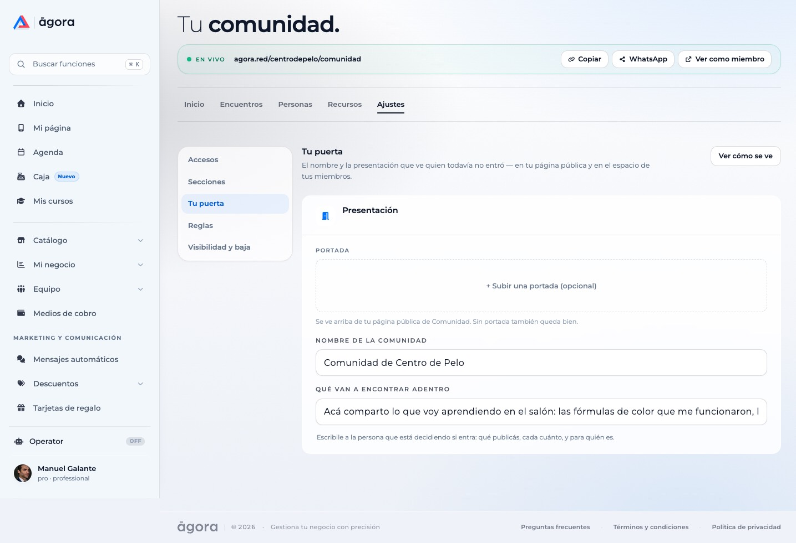
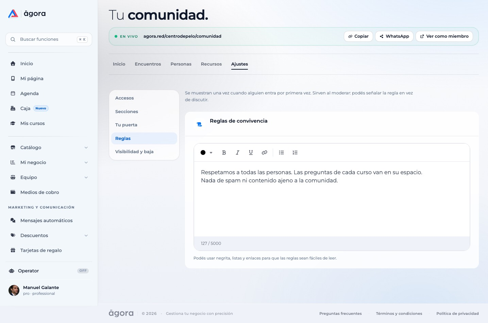
Izquierda: Tu puerta. Derecha: las reglas que el miembro acepta al entrar.
Capítulo 5 · En tu página
Entrar como tu gente
El mismo recorrido, ahora del otro lado: la puerta pública, el alta gratis, las reglas y la vida adentro — con Julieta, una alumna real de prueba.
TU PÁGINA agora.red/centrodepelo/comunidad
La puerta, de visitante
La portada corona la página — y todo respira la paleta del negocio: el ambiente lo pone la marca de cada profesional. Abajo: comunidad privada, la presentación escrita en Ajustes, señales de actividad reales — 1 publicación en el último mes · Encuentros programados — y la oferta: Alumnos, gratis, con lo que incluye adentro (Novedades y Consultas). En el navbar del negocio ya vive el chip Comunidad.

TU PÁGINA La puerta · logueada
Con sesión, un solo botón
Julieta inicia sesión y la puerta cambia a lo esencial: Unirme gratis. Sin checkout, sin fricción — el acceso es gratuito y el sistema lo dice así.
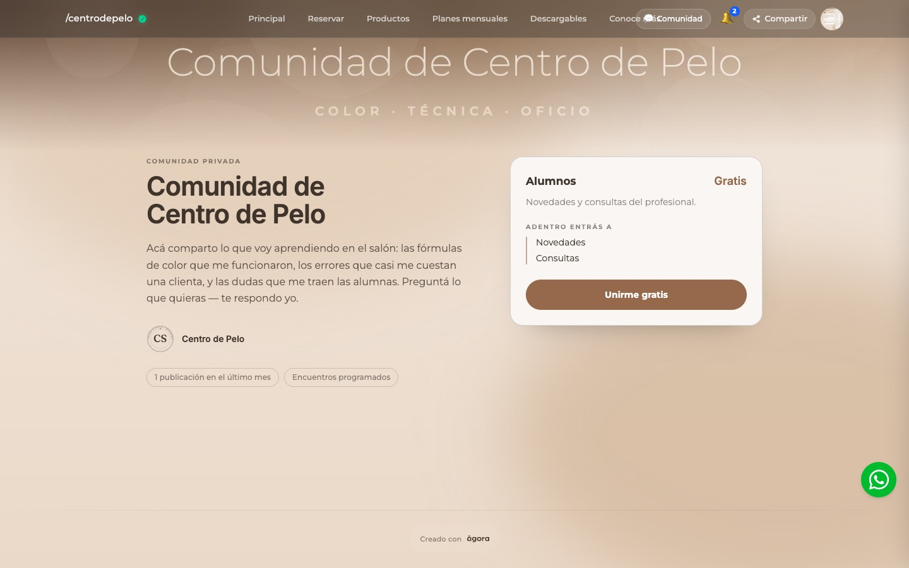
TU PÁGINA Primera entrada
Las reglas, antes de pasar
Al unirse, una sola pantalla: las reglas de la casa. Aceptar y entrar, o «primero quiero leer un poco» — se puede mirar sin aceptar, pero para publicar o responder hace falta aceptarlas. Solo la primera vez. Y al moderar, el profesional puede señalar la regla en vez de discutir.
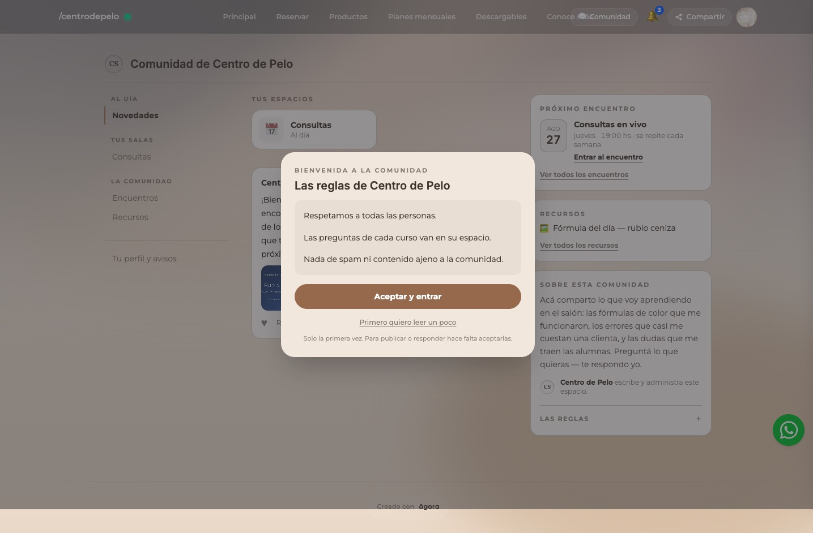
TU PÁGINA Adentro
La home del miembro
A la izquierda, el corredor: Al día (Novedades), Tus salas (Consultas), La comunidad (Encuentros y Recursos) y tu perfil al final. Al centro, la bienvenida con su foto. A la derecha, el riel: próximo encuentro (jue 27, 19:00, «Entrar al encuentro»), recursos, la presentación y las reglas — todo teñido con el ambiente del negocio.
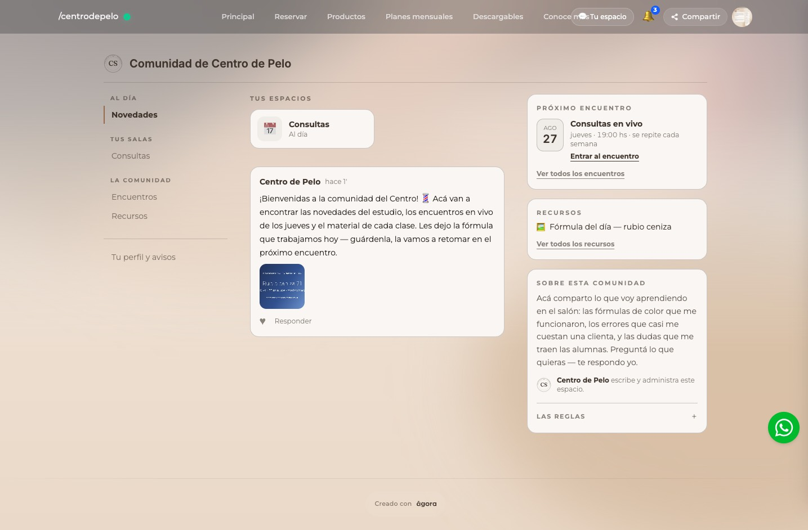
TU PÁGINA Sección Consultas
El composer del miembro
En Consultas los miembros publican. El composer dice quién lo va a ver — «lo ven los miembros de este espacio» — y acepta +Foto y +PDF. Julieta escribe su consulta real y adjunta la paleta de referencia de una clienta.
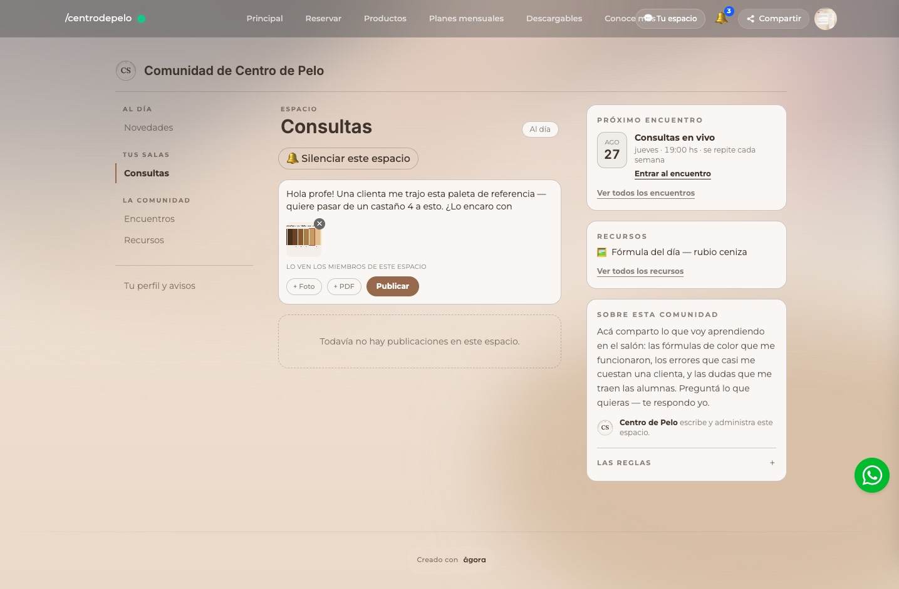
TU PÁGINA Sección Consultas
Publicado: la consulta quedó en su lugar
El post de Julieta queda en Consultas, con su imagen y su pregunta técnica — en el espacio del tema, no perdido en un chat.
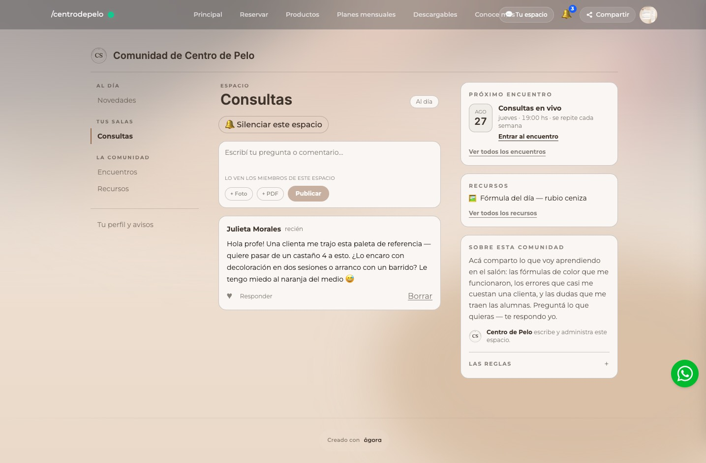
TU PÁGINA Novedades · el hilo
También puede preguntar en tus posts
Sobre la bienvenida, Julieta deja una segunda pregunta como comentario. La conversación queda pegada al contenido que la inició.
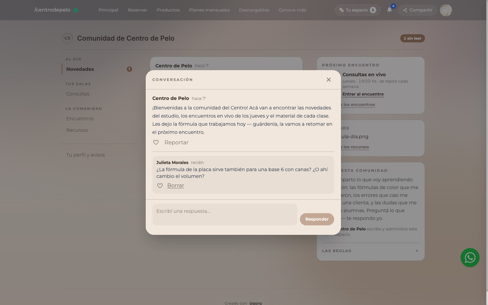
Capítulo 6 · Panel ↔ miembro
El ida y vuelta
Lo que la miembro escribió no queda flotando: el panel lo convierte en un pendiente concreto, y la respuesta vuelve fijada.
PANEL Inicio
«1 pregunta sin responder»
El Inicio del profesional cambia solo: la tarjeta Hoy del rail avisa «1 pregunta sin responder» con su botón Responder, las métricas ya están en movimiento — 2 activos, 2 publicaciones — y el filtro Sin responder va directo a lo que falta.
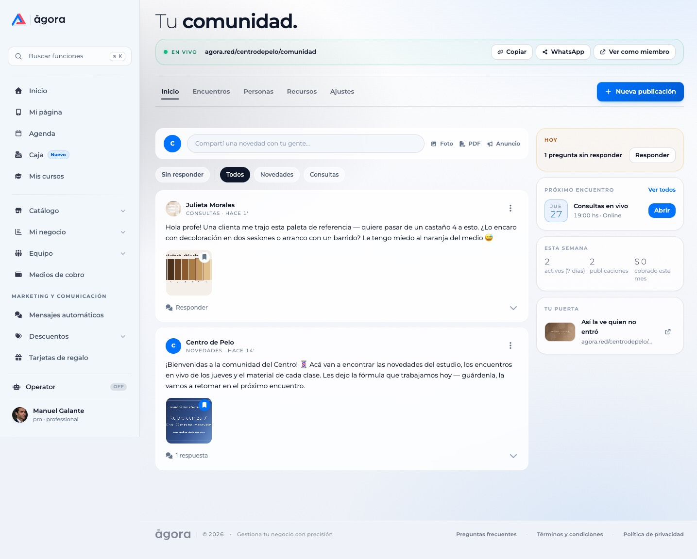
PANEL El hilo · responder y fijar
La respuesta que queda arriba
En el hilo, el profesional escribe la respuesta y marca «dejar fijada como respuesta». Queda destacada arriba del hilo con la etiqueta respuesta fijada — la próxima persona con la misma duda la encuentra sin preguntar de nuevo.
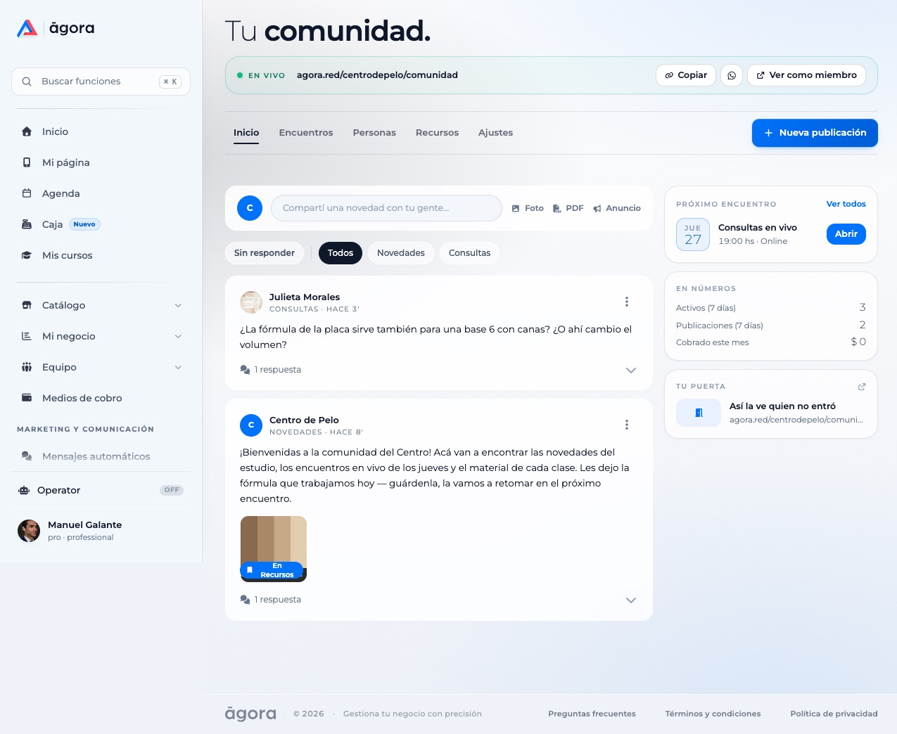
TU PÁGINA Del lado de Julieta
La respuesta llegó, y quedó fijada
Julieta abre su consulta y ve la respuesta destacada con su 📌. Además le suena la campanita: los avisos del espacio le avisaron sin que tenga que revisar.
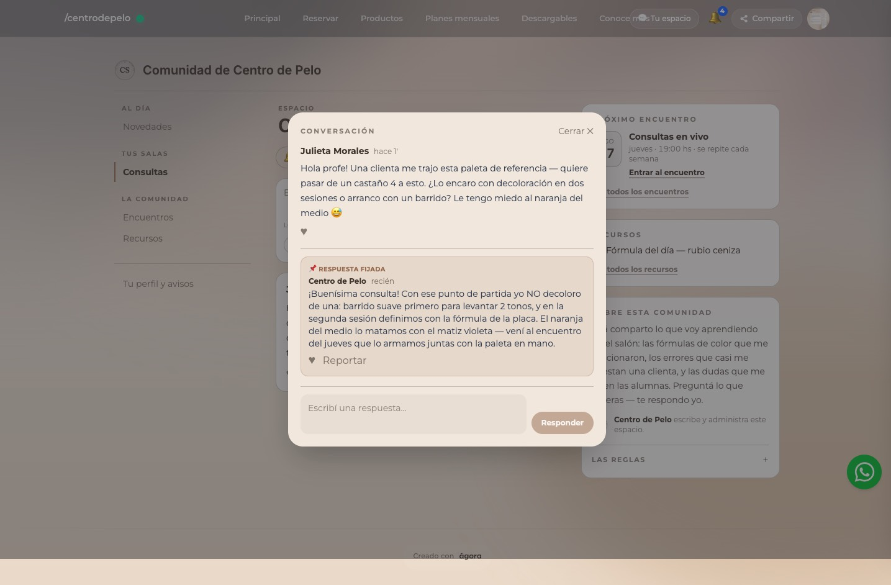
Capítulo 7 · El día a día
Personas y salida
Quién está adentro, de dónde vino su acceso — y una salida sin trampas para el miembro, con confirmación en dos pasos.
PANEL Personas
Quién está adentro
La lista completa, ahora tabla: persona, accesos y de dónde vino, última visita y estado — con las acciones (suspender, quitar un acceso manual) en el ⋮ de cada fila. Filtro por acceso, buscador por nombre o email, y Exportar CSV/Reportes recogidos en un menú.
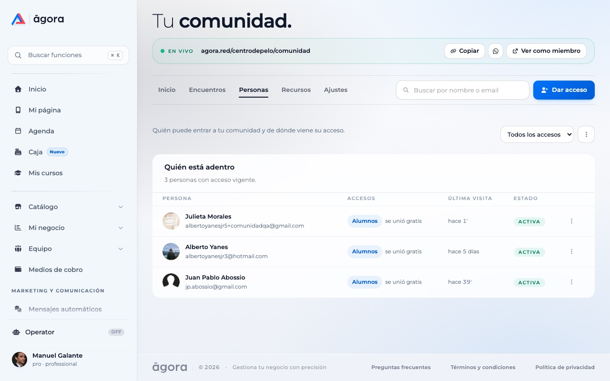
TU PÁGINA Tu perfil y avisos
La membresía, en manos del miembro
Desde el corredor, Tu perfil y avisos es una sección con nombre propio: Julieta ve su membresía (Alumnos · acceso gratis), controla los avisos por espacio — todos, solo lo mío, o silenciado — y la salida está a la vista, sin tickets de soporte: Dejar la comunidad.
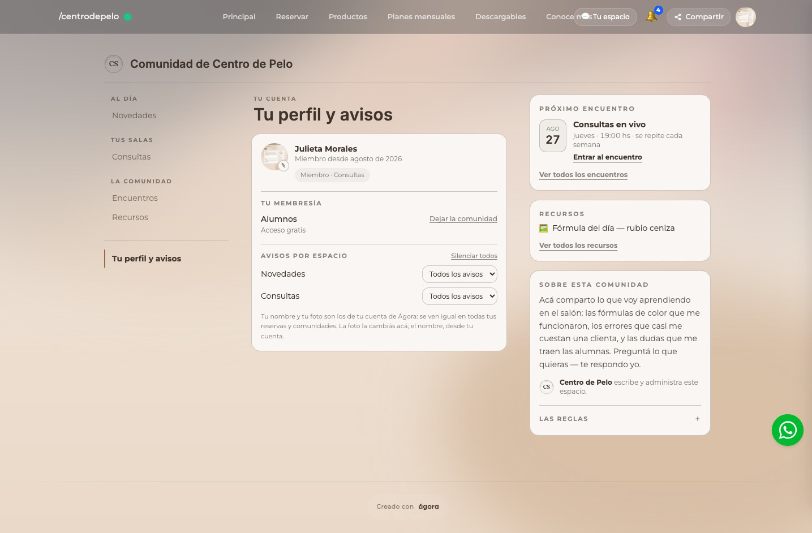
TU PÁGINA Dejar la comunidad
La baja, en dos pasos y sin letra chica
Un click no alcanza: el sistema explica — salís ahora mismo y perdés el acceso que te da esta membresía — y pide Confirmar baja o Mantener. Julieta confirma y vuelve a la puerta, que otra vez le ofrece unirse. El círculo cierra completo.
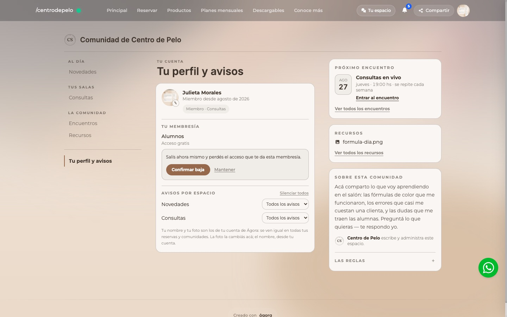
Los rincones
Lo que solo aparece cuando pasa algo
Cuatro estados que el recorrido feliz no muestra: la moderación cuando alguien reporta, la comunidad oculta con su camino de vuelta, y el panel entero en el teléfono.
PANEL Reportes · moderación
Un reporte, y el sistema ya tomó partido
La pestaña Reportes aparece solo cuando hay algo que revisar — con su contador. Adentro, el reporte completo: quién reportó y por qué, la publicación señalada, y la marca «oculto preventivo» — mientras el profesional decide, los miembros no lo ven. Tres salidas: Mantener, Eliminar, o Eliminar y suspender — con la letra chica honesta: la suspensión impide publicar y comentar, jamás toca lo que la persona compró.
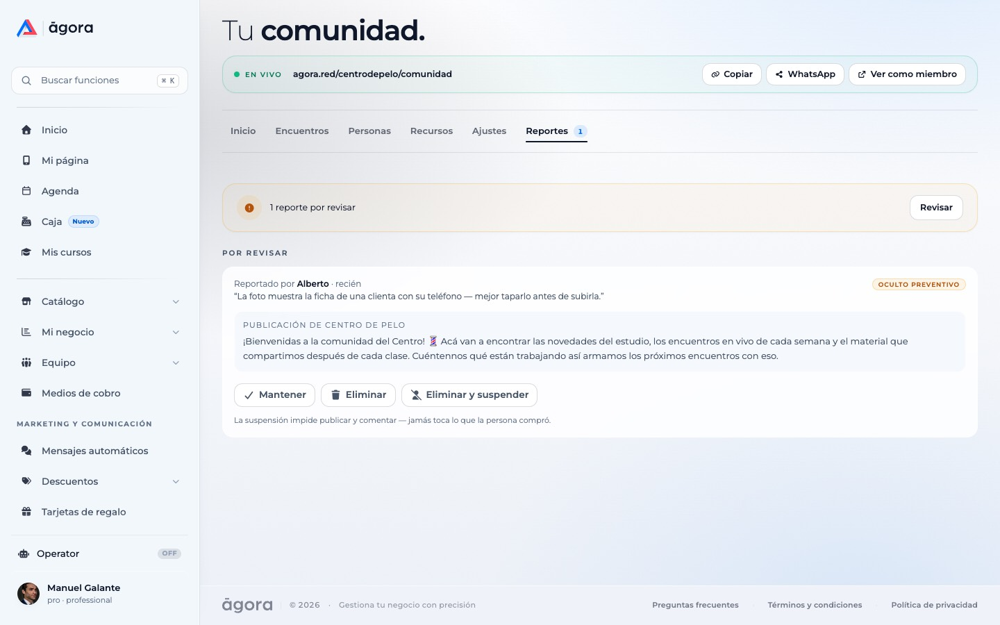
PANEL Visibilidad · oculta
Oculta, pero nunca fuera de tu alcance
Al ocultarla, la puerta pública desaparece — y el panel se queda: una barra ámbar reemplaza al EN VIVO («Tu página no la muestra y nadie puede entrar — el contenido sigue guardado») con el Volver a mostrarla a un click, desde la barra o desde Visibilidad y baja.
Mapear este rincón destapó un bug real: ocultar la comunidad te tiraba al wizard de la primera vez, como si nunca la hubieras publicado. Se arregló en el momento y este es el después.
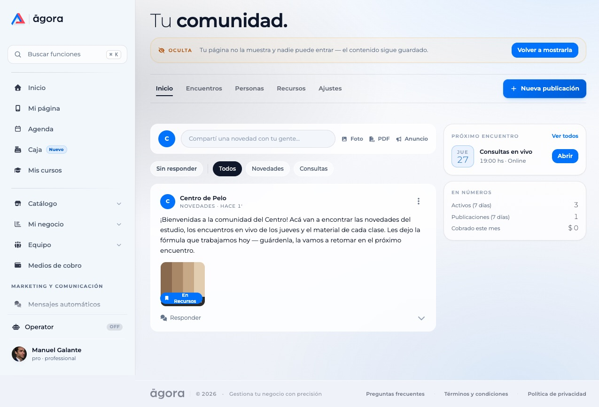
PANEL Mobile · 390 px
El panel en el bolsillo
El rediseño baja a mobile con decisiones propias, no con la versión desktop apretada: en el Inicio, lo accionable del rail sube arriba del feed — pendientes de hoy y próximo encuentro primero —; en Encuentros vuelve el conmutador Lista / Calendario (en pantalla chica conviven mal); y Personas cambia la tabla por la lista.
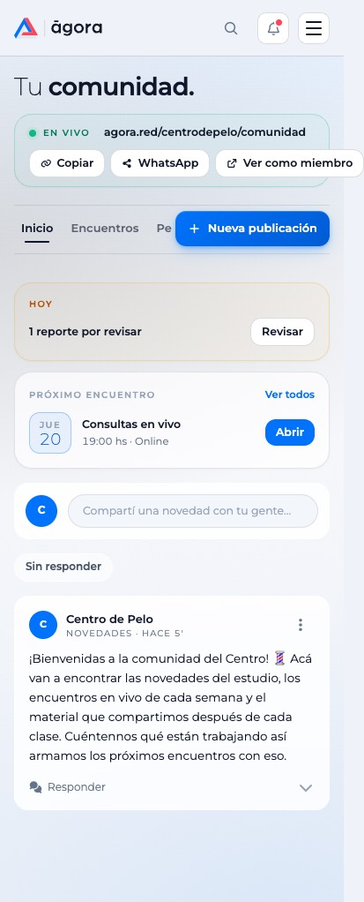
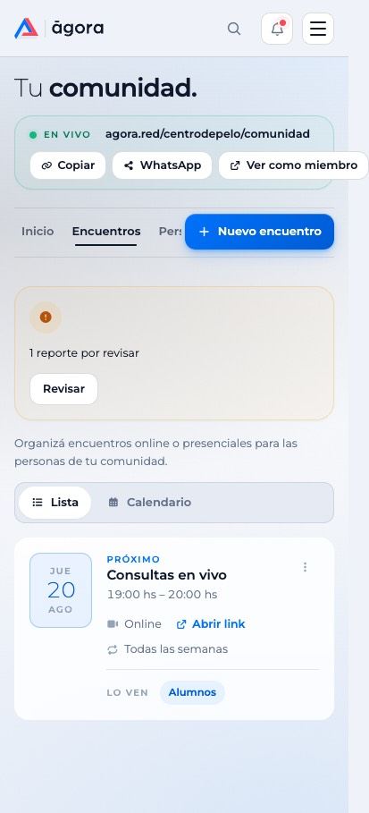
PANEL Mobile · 390 px
El calendario y la gente, en chico
El calendario mensual ocupa el ancho completo con sus puntos por fecha, y Personas vuelve al formato lista — misma información que la tabla, apilada para el pulgar.

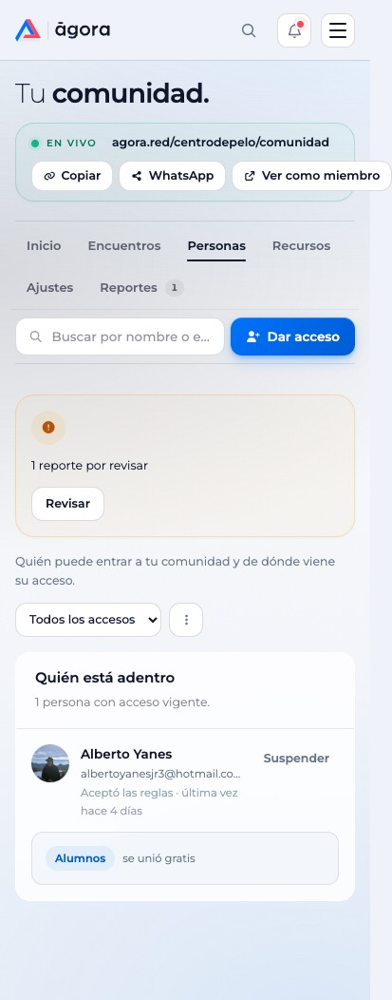
Al cierre
Qué quedó demostrado
- El arranque es guiado de verdad: cinco pantallas explican el modelo antes del precio, y tres decisiones (nombre, acceso, publicar) dejan la comunidad en vivo.
- El sistema empuja el primer contenido: la guía tacha solo lo que realmente pasó — novedad, encuentro, gente — sin flags que se desincronicen.
- Las series de encuentros se administran como series: editar, cancelar una fecha o toda la serie son acciones distintas, y las excepciones quedan documentadas.
- La puerta vende sola: portada, presentación, señales de actividad reales y el acceso con su precio — y el miembro entra con reglas aceptadas antes de escribir.
- La conversación tiene dueño: lo sin responder es un pendiente visible, la respuesta se fija, y el miembro se entera por sus avisos.
- El espacio del miembro navega con el corredor: Al día, Tus salas, La comunidad y su perfil — en desktop; los chips siguen en el teléfono.
- Entrar y salir es simétrico: unirse gratis es un click; irse son dos, con las consecuencias explicadas.